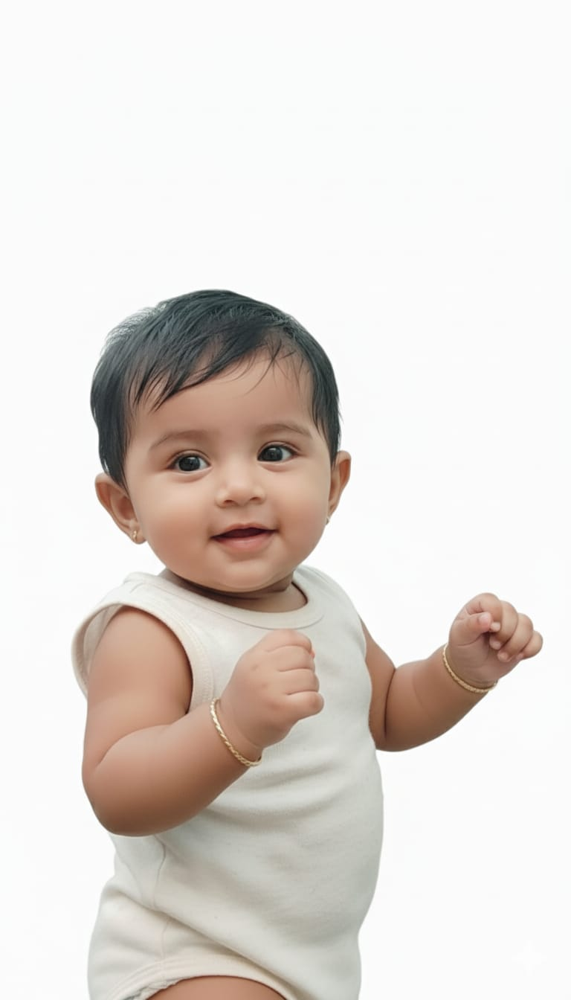

Welcome to our little world of joy! We provide premium quality, super soft clothing, and safe accessories designed specially for your little ones.
Our products are made with 100% organic cotton to ensure maximum comfort for your baby's delicate skin. Explore our colorful and playful collections today! 🧸🍼
